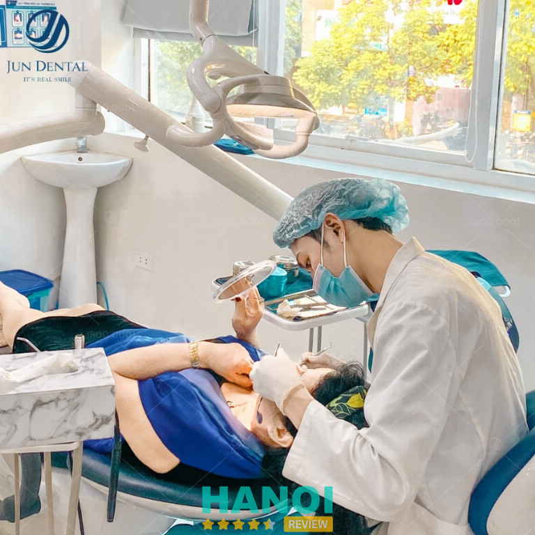
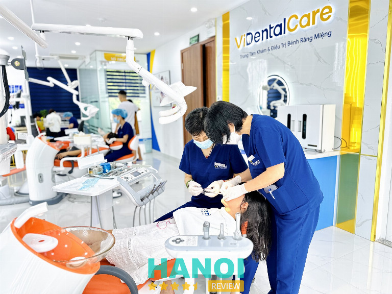
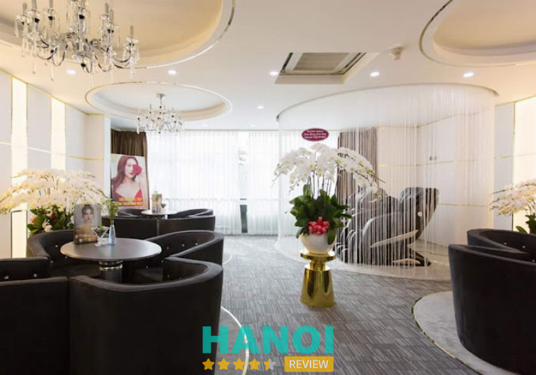
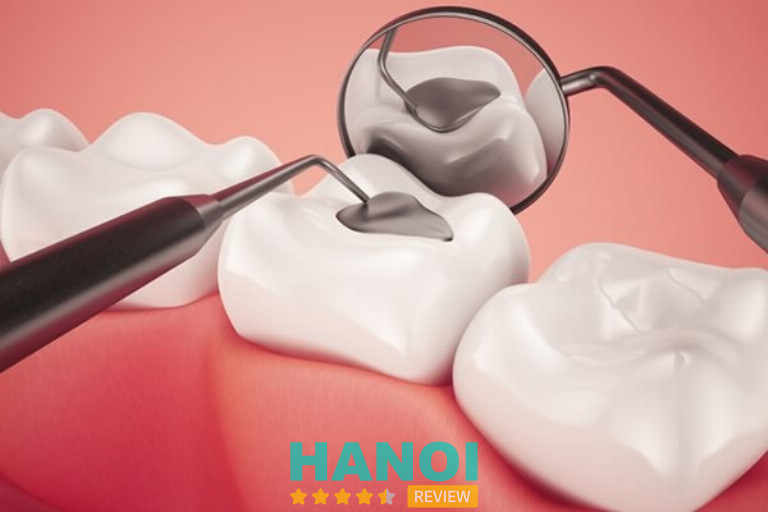
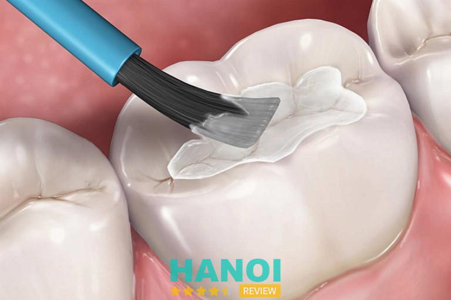
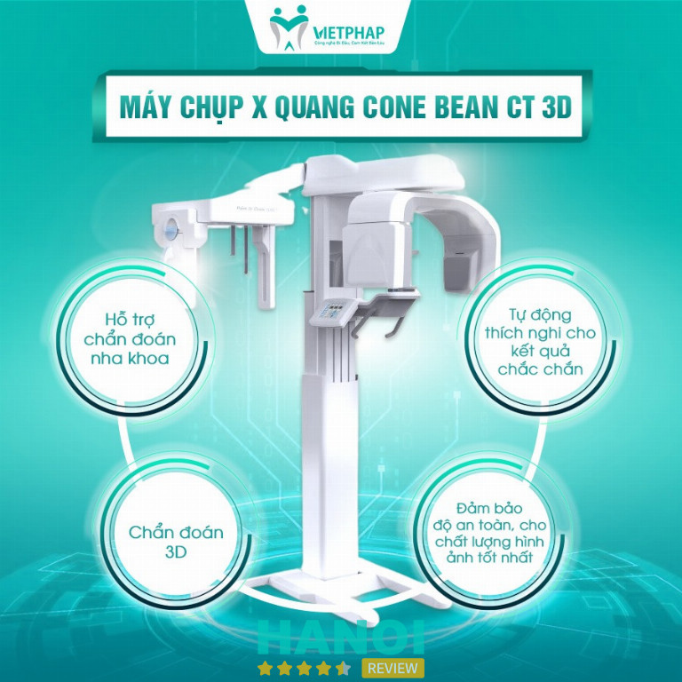
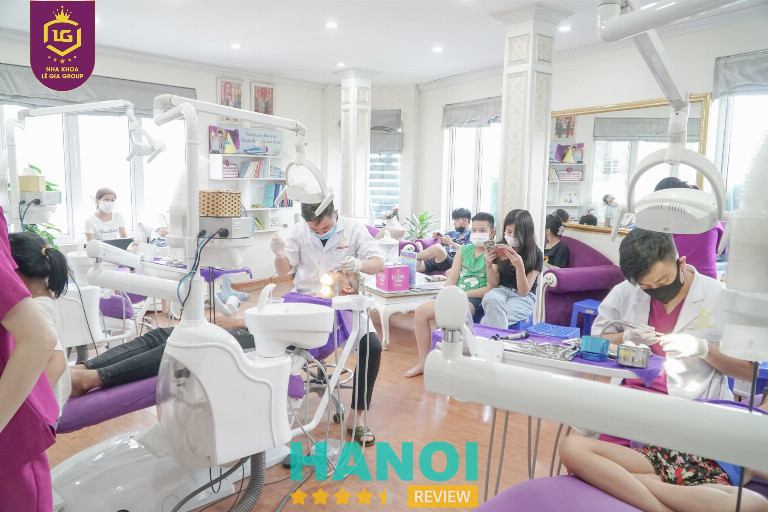
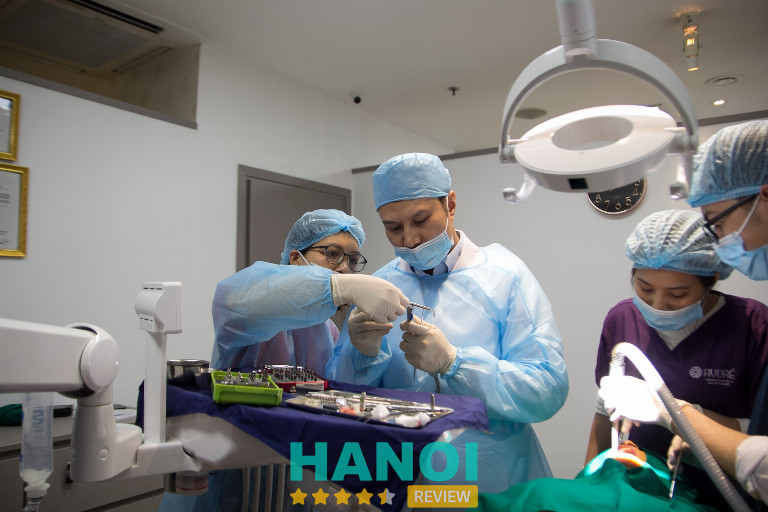

10 Địa chỉ trám răng thẩm mỹ tại Hà Nội uy tín, chất lượng nhất
Răng sứt mẻ hay các răng bị sâu đều nên được trám để không gây mất thẩm mỹ, đồng thời cũng là phương pháp để hạn chế tối đa tình trạng mất răng.
Vậy, giữa hàng loạt các địa chỉ trám răng thẩm mỹ ở Hà Nội, đâu là các cơ sở đáng tin cậy nhất? Câu hỏi này sẽ được HaNoiReview giải đáp ngay trong phần nội dung sau đây để bạn đọc không phải lo lắng hay mất nhiều thời gian, công sức.
Top 10 Nha khoa trám răng thẩm mỹ ở Hà Nội giá tốt, bác sĩ giỏi
Trám răng thẩm mỹ trở thành một trong các dịch vụ không thể thiếu trong lĩnh vực nha khoa cơ bản để hỗ trợ hoàn thiện các khuyết điểm trên răng. Với sự phát triển của công nghệ sản xuất vật liệu trám, nhiều cơ sở nha khoa ở Hà Nội nói chung và cả nước nói riêng đều có thể đáp ứng nhu cầu đa dạng của người dân.
Nha khoa thẩm mỹ Jun Dental
Nha khoa thẩm mỹ Jun Dental là cơ sở nha khoa chuyên về các phương pháp thẩm mỹ răng. Nhờ sự kế thừa những công nghệ tiên tiến từ trụ sở chính được thành lập tại Hàn Quốc năm 2011, nơi đây đã trở thành địa điểm nha khoa uy tín, chuẩn quốc tế hàng đầu.
Có thế mạnh về các dịch vụ thẩm mỹ, chính vì lẽ đó, không do dự khi khẳng định Nha khoa thẩm mỹ Jun Dental là địa chỉ trám răng thẩm mỹ tại Hà Nội chất lượng. Những trải nghiệm ấn tượng tại đây sẽ khiến bạn xiêu lòng ngay khi đọc được các phản hồi, bình luận từ đông đảo khách hàng cũ.
Từng yếu tố nhỏ nhất tại Nha khoa thẩm mỹ Jun Dental đều được chăm chút tỉ mỉ. Ngay từ khi bước chân đến phòng khám, bạn sẽ không ngừng bất ngờ bởi hệ thống cơ sở hạ tầng bắt mắt.

Tuy trang trí đơn giản, nhưng đơn vị hướng theo phong cách hiện đại, tinh tế. Mỗi khu vực đều được Nha khoa thẩm mỹ Jun Dental trang bị đầy đủ các hệ thống máy móc cùng các tiện nghi tương ứng, thậm chí là tại khu vực chờ thoải mái, rộng rãi.
Dịch vụ trám răng thẩm mỹ nói riêng và các phương pháp nha khoa khác tại Nha khoa thẩm mỹ Jun Dental nói chung đều là tạo nên những điểm cộng cao cho khách hàng. Từ công cụ, vật liệu nha khoa cho đến phòng điều trị đều được chuẩn bị cẩn thận.
Vật liệu trám răng là sản phẩm nhập khẩu quốc tế để chuẩn theo các công nghệ trám răng mới hiện hành. Quy trình các bước trám khoa học, tiên tiến hỗ trợ đảm bảo an toàn khi điều trị và tăng độ bền cho phần trám của răng lên tới nhiều năm.
Vậy, còn đắn đo gì nữa để bạn không nhanh tay đăng ký trải nghiệm trám răng thẩm mỹ tại Nha khoa thẩm mỹ Jun Dental. Phòng khám sẽ mang đến cho bạn các dịch vụ chuẩn quốc tế 5 sao cũng những hiệu quả không thể ngờ đến.
Thông tin liên hệ:
- Địa chỉ: 156 Vũ Phạm Hàm, P. Yên Hòa, Q. Cầu Giấy, Hà Nội
- Điện thoại: 0988 453 883
- Website: jundental.vn
- Facebook: FB.com/108902335295097
Nha Khoa Vidental
Với nhiều năm hoạt động dựa trên tiêu chuẩn quốc tế, Nha Khoa Vidental đã đồng hành cùng người dân Hà Nội trong hành trình bảo vệ và chăm sóc sức khoẻ răng miệng.
Dịch vụ trám răng thẩm mỹ cũng được Vidental chú trọng phát triển như một phương pháp phổ biến để hỗ trợ khi khách hàng có nhu cầu khắc phục các khuyết điểm về răng miệng. Cùng đội ngũ bác sĩ tài năng có đầy đủ bằng cấp và được đào tạo bài bản, nha khoa Vidental cam kết sẽ mang tới cho bạn những dịch vụ xứng đáng nhất với mức chi phí bỏ ra.

Quy trình thăm khám đạt chuẩn quốc tế với các bước được sắp xếp khoa học. Răng trám có thể sử dụng nhiều vật liệu khác nhau như trám composite, trám kim loại, vàng, … theo nhu cầu và lựa chọn của khách hàng.
Đặc điểm chung của các loại vật liệu trám răng tại đây chính là độ tỉ mỉ, độ bền của mức độ tương đồng với răng thật cao. Chính sách bảo hành cũng được Vidental áp dụng với mọi khách hàng để bạn có thể an tâm quay lại kiểm tra, thăm khám định kỳ bất kỳ lúc nào.
Mỗi một lần trám răng hay sử dụng bất kỳ dịch vụ nào tại Vidental, bạn sẽ đều nhận được sự tư vấn tận tâm, hỗ trợ nhiệt tình từ đội ngũ y tế. Chắc chắn nha khoa Vidental sẽ là nơi lý tưởng để bạn hoàn thiện và bảo vệ hàm răng của mình.
Thông tin liên hệ:
- Địa chỉ: 18 Huỳnh Thúc Kháng kéo dài, Đống Đa, Hà Nội
- Điện thoại: 0987 933 309
- Website: nhakhoavidental.com
- Facebook: FB.com/nhakhoavidentalvietnam
XEM THÊM: 10 Thẩm mỹ viện tại Hà Nội uy tín, dịch vụ tốt, bác sĩ mát tay
Nha khoa Quốc tế Dencos Luxury
Trám răng là phương pháp hiệu quả cho các khách hàng ở mọi độ tuổi trong các trường hợp hàm răng thưa, răng sâu, răng sứt mẻ để mang lại sự tự tin khi cười, giao tiếp. Hiểu được điều đó, Nha khoa Quốc tế Dencos Luxury đã luôn nỗ lực hết mình để mang đến sự hài lòng cũng như kết quả tốt nhất cho những khách hàng của mình.
Với sứ mệnh đề cao quyền lợi của khách hàng như một yếu tố hàng đầu, Nha khoa Quốc tế Dencos Luxury nhập khẩu các vật liệu trám chính hãng. Các sản phẩm này đều trải qua quá trình chọn lọc, kiểm định chất lượng của các tổ chức uy tín cũng như Bộ Y tế.

Quy trình tiêu chuẩn Châu Âu chính là điểm đặc biệt phải nhắc đến khi nói về dịch vụ trám răng thẩm mỹ tại Nha khoa Quốc tế Dencos Luxury. Mỗi bước đều được thực hiện dựa trên tiêu chuẩn an toàn, chất lượng và đạt độ thẩm mỹ cao nhất có thể.
Về giá cả, phần đông khách hàng đã thể hiện sự hài lòng khi chọn Nha khoa Quốc tế Dencos Luxury. Nhờ sự tinh tế trong việc phân phối giá cả, Nha khoa Quốc tế Dencos Luxury đã giúp nhiều khách hàng có mức tài chính khác nhau đều an tâm điều trị nha khoa mà không phải gặp các áp lực về tài chính.
Thông tin liên hệ:
- Địa chỉ: 137 Bùi Thị Xuân, P. Bùi Thị Xuân, Q. Hai Bà Trưng, Hà Nội
- Điện thoại: 0902 685 599
- Website: nhakhoadencosluxury.com.vn
- Facebook: FB.com/nhakhoaquoctedencosluxury
Nha khoa Miso Dental
Đối với Nha khoa Miso Dental, sứ mệnh chăm sóc sức khỏe răng miệng cũng như hoàn thiện một hàm răng đạt độ thẩm mỹ cao cho khách hàng là một trong các tiêu chí luôn được ưu tiên từ những ngày đầu thành lập. Với các kỹ thuật tiên tiến cũng nhiều dịch vụ nha khoa chất lượng, Nha khoa Miso Dental đã thành công phục vụ tốt và mang đến sự hài lòng vượt trội cho đông đảo khách hàng khu vực.
Nha khoa Miso Dental được biết đến là địa chỉ trám răng thẩm mỹ hàng đầu tại Hà Nội. Nơi đây không chỉ đảm bảo an toàn cho khách hàng mà còn ứng dụng các thủ thuật tiên tiến nhằm hạn chế xâm lấn, không gay đau, không làm chảy máu và không gây biến chứng sau khi trám răng.
100% vật liệu trám răng tại Nha khoa Miso Dental đều là hàng chính hãng. Việc chọn lọc kỹ lưỡng nguồn gốc xuất xứ của các vật liệu trám là yếu tố quan trọng trong cam kết về độ bền, tính thẩm mỹ mà Nha khoa Miso Dental đã hứa hẹn với khách hàng.
Đội ngũ y bác sĩ cùng các nhân viên cũng tạo nên cảm tình lớn khi khách hàng chọn Nha khoa Miso Dental chăm sóc, điều trị các vấn đề về răng miệng ở Hà Nội. Sự tận tâm, chuyên nghiệp cùng kỹ năng ngành nghề của đội ngũ tại Nha khoa Miso Dental chưa làm khách hàng nào phải phàn nàn, hay thể hiện sự thất vọng.
Với những lợi thế nổi bật trên, Nha khoa Miso Dental chính là lựa chọn đáng xem xét khi bạn cần cải thiện các vấn đề răng sứt mẻ, răng sâu, răng thưa…. Ngoài ra, các dịch vụ đa khoa đa dạng tại Nha khoa Miso Dental cũng là lựa chọn tuyệt vời để bạn nâng tầm và bảo vệ nụ cười của mình.
Thông tin liên hệ:
- Địa chỉ: 291 Nguyễn Khang, p. Yên Hoà, Q. Cầu Giấy, Hà Nội
- Điện thoại: 0971 768 883
- Website: nhakhoamiso.vn
- Facebook: FB.com/nhakhoa.misodental
GỢI Ý: 5 Phòng khám nha khoa Q. Cầu Giấy được tin chọn hàng đầu
Nha khoa Phạm Dương
Nha khoa Phạm Dương được thành lập từ năm 2008 là nơi ấp ủ sứ mệnh giúp người dân Hà Nội có được hàm răng chắc khỏe cùng sức khỏe tổng thể tốt nhất. Đây là phòng khám nha khoa uy tín chuyên cung cấp các dịch vụ như nha khoa tổng quát, nha khoa điều trị, nha khoa phục hồi, niềng răng chỉnh nha, ….
Điểm ấn tượng chính là việc Nha khoa Phạm Dương luôn chú trọng trong việc đầu tư toàn diện về mặt cơ sở hạ tầng và yếu tố con người song song. Không chỉ dừng lại ở đó, các công nghệ, phương pháp kỹ thuật nha khoa mới cũng được phòng khám chủ động chuyển giao để mang lại giải pháp thích hợp, hiệu quả nhất cho người tiêu dùng.

Nha khoa Phạm Dương tạo nên lợi thế là địa chỉ trám răng thẩm mỹ hiện đại, đa dạng tại Hà Nội với 4 vật liệu trám là vàng, trám răng sứ, trám răng hỗn hợp bạc, trám plastic tổng hợp. Trước khi trám, khách hàng sẽ được nha tá vệ sinh toàn bộ khoang miệng và loại bỏ các ổ vi khuẩn bám tại vùng răng cần trám.
Quy trình trám răng được thực hiện theo tiêu chuẩn dựa trên các yêu cầu từ Bộ Y tế. Mức chi phí các dịch vụ trám răng tại Nha khoa Phạm Dương được đảm bảo bình ổn và khách hàng có thể tận dụng nhiều ưu đãi đồng thời tại đây để tiết kiệm chi phí.
Với sự hiện diện của hiện đại hóa trong mọi phương diện cùng những điểm khác biệt, Nha khoa Phạm Dương chính là địa điểm lý tưởng để bạn chăm sóc tốt nhất cho nụ cười rạng rỡ của mình. Liên hệ ngay tới Nha khoa Phạm Dương để được tư vấn và hỗ trợ hoàn toàn miễn phí.
Thông tin liên hệ:
- Địa chỉ: Lầu 4, 52 Bà Triệu, P. Hàng Bài, Q. Hoàn Kiếm, Hà Nội
- Điện thoại: 0929 29 6666
- Website: nhakhoaphamduong.vn
- Facebook: FB.com/nhakhoaphamduong
Nha khoa quốc tế Á Châu
Khi răng bị sứt mẻ, sâu hay các vấn đề cơ bản khác, để bảo vệ tối ưu răng thật mà không cần tốn quá nhiều chi phí, thì phương pháp trám răng thẩm mỹ tại Nha khoa quốc tế Á Châu là lựa chọn phù hợp nhất. Phòng khám đã hoàn thiện thành công hàng ngàn ca trám răng khắc phục các vấn đề ở nhiều mức độ, nên bạn sẽ hoàn toàn an tâm và cảm nhận được giá trị tại đây.
Đội ngũ y bác sĩ chính là yếu tố chủ lực và là những người mà Nha khoa quốc tế Á Châu luôn tự hào. Ngoài việc tuyển chọn với các tiêu chí khắt khe, thì các bác sĩ tại đây luôn được hỗ trợ đào tạo và tham gia các hội thảo cập nhật công nghệ, kỹ thuật mới nhất.

Công nghệ trám phục hình laser tech được ứng dụng quy củ cùng với các công cụ, máy móc nha khoa hiện đại có bố trí khoa học tại các phòng chức năng của Nha khoa quốc tế Á Châu. trước và sau khi sử dụng, thì cả phòng khám, trang thiết bị đều được khử khuẩn theo quy trình khép kín cùng như trong lò hấp chuẩn y tế với các dụng cụ phù hợp.
Tình trạng nhiễm khuẩn hay lay nhiễm chéo giữa các bệnh nhân là hoàn toàn không xảy ra tại Nha khoa quốc tế Á Châu. Vì ngoài quy trình an toàn, các vật dụng tiêu hao cũng cam kết chỉ được sử dụng một lần duy nhất trên mỗi lượt thăm khám.
Nha khoa quốc tế Á Châu nhìn chung với những ưu điểm trên, nơi đây chính là điểm đến hoàn hảo cho những ai đang cần tìm kiếm địa chỉ trám răng thẩm mỹ chất lượng ở Hà Nội. Cùng đến và trải nghiệm những dịch vụ đẳng cấp quốc tế tại đây để chăm sóc cho nụ cười của bạn.
Thông tin liên hệ:
- Địa chỉ: 95E Lý Nam Đế, P. Cửa Đông, Q. Hoàn Kiếm, Hà Nội
- Điện thoại: 0987 302 621
- Website: nhakhoaquocteachau.vn
- Facebook: FB.com/Nhakhoaquocteachau.vn
THAM KHẢO: 5 Phòng khám nha khoa tại Q. Hoàn Kiếm chất lượng đi đầu
Nha khoa quốc tế Việt Pháp
Tại Hà Nội, có hàng loạt các cơ sở nha khoa chất lượng – nơi cung cấp các dịch vụ nha khoa hàng đầu. Trong đó, có đến 4 cơ sở thuộc hệ thống Nha khoa quốc tế Việt Pháp với sự đồng bộ về diện mạo cũng như chất lượng và phong cách làm việc.
Qua hơn 15 năm hình thành và phát triển, Nha khoa quốc tế Việt Pháp cùng đội ngũ nhân sự hùng hậu đã từng bước khẳng định vị thế lớn mạnh của mình trong lĩnh vực nha khoa đa dịch vụ. Thành công giúp hàng ngàn khách hàng chăm sóc, điều trị các vấn đề về răng miệng trong suốt hơn một thập kỷ.
Mỗi bác sĩ đang phối hợp công tác tại Nha khoa quốc tế Việt Pháp đều là các chuyên gia nha khoa giàu kinh nghiệm, có chuyên môn cũng như kỹ năng trám răng tiên tiến. Bên cạnh đó, họ còn là những người tận tâm với nghề, luôn nhiệt tình hỗ trợ để khách hàng có thể được giải đáp thắc mắc hiệu quả, chi tiết.

Hệ thống máy móc cũng như cơ sở vật chất được đầu tư bài bản ngay từ những ngày đầu thành lập. Trong suốt nhiều năm, Nha khoa quốc tế Việt Pháp cũng tích cực cải tiến, nâng cấp và cập nhật các công nghệ mới để đáp ứng theo nhu cầu gia tăng và ngày càng phức tạp của khách hàng.
Chính vì thế, nếu bạn chưa biết tìm địa chỉ trám răng thẩm mỹ nào ở Hà Nội tốt nhất, thì nên tham khảo Nha khoa quốc tế Việt Pháp. Nha khoa này chắc chắn sẽ giúp bạn bảo vệ hàm răng một cách hiệu quả hơn những gì bạn mong đợi.
Thông tin liên hệ:
- Địa chỉ: 24 Trần Duy Hưng, P. Trung Hoà, Q. Cầu Giấy, Hà Nội
- Điện thoại: 0363 858 587
- Website: nhakhoaquoctevietphap.vn
- Facebook: FB.com/nhakhoaquoctevietphapvn
Nha khoa Lê Gia Group
Với 6 cơ sở trên địa bàn Hà Nội, Nha khoa Lê Gia Group nổi tiếng là một trong các địa chỉ trám răng thẩm mỹ được đánh giá cao ở khu vực. Nơi đây chuyên cung cấp đa dạng các dịch vụ từ các phương pháp cơ bản cho đến những kỹ thuật nha khoa chuyên sâu để đảm bảo mọi vấn đề của khách hàng đều được giải quyết một cách tốt nhất.
Việc trang bị đầy đủ các trang thiết bị hiện đại, nhập khẩu các máy móc nha khoa tối tân từ thị trường quốc tế chính là yếu tố hỗ trợ đắc lực cho các dịch vụ nha khoa tiên tiến tại đây. Mỗi phòng khám hay các phòng chức năng đều sở hữu những thiết bị riêng bị để phục vụ và giúp các y bác sĩ hoàn thành nhiệm vụ thăm khám, điều trị nha khoa cho khách hàng thuận lợi.

Nha khoa Lê Gia Group quy tụ đội ngũ y bác sĩ nha khoa, nha tá và các nhân viên tư vấn có chuyên môn và sở hữu nhiều năm kinh nghiệm trong lĩnh vực này. Tính chuyên môn hóa được đề cao tại đây, chính vì thế, mỗi bác sĩ sẽ có thế mạnh riêng để đảm bảo tính chất lượng, phong phú trong các mảng dịch vụ đơn vị cung cấp.
Vậy liệu nha khoa, nhất là các vật liệu trám được ứng dụng trong các phương pháp trám răng cho khách hàng đều được đội ngũ chọn lọc theo tiêu chí chất lượng hàng đầu. Tất cả các sản phẩm đều có nguồn gốc xuất xứ minh bách và có thông tin rõ ràng để khách hàng có thể thuận tiện tham khảo khi cần.
Mỗi khách hàng có tình trạng răng sứt mẻ, răng sâu, răng thưa,…cần khắc phục khác nhau. Chính vì thế, các y bác sĩ giàu kinh nghiệm tại Nha khoa Lê Gia Group sẽ đích thân thăm khám và tư vấn đề đưa ra lộ trình trám răng phù hợp.
Trước mỗi lần trám, nha tá viên tại Nha khoa Lê Gia Group sẽ triển khai thông báo chi phí, chuẩn bị phòng khám vô trùng cùng các công cụ, thiết bị sạch sẽ để phục vụ khách hàng. Trong quá trình trám, bác sĩ luôn tâm lý trò chuyện cũng như tạo ra cảm giác thoải mái để khách hàng không cảm thấy bất an, lo lắng với tiếng ồn của máy hay không khí tại nha khoa.
Sau khi hoàn thiện tại địa chỉ trám răng thẩm mỹ ở Hà Nội này, mỗi khách hàng cũng được chính bác sĩ điều trị hỏi han và dặn dò kỹ càng các phương pháp chăm sóc răng miệng tại nhà. Điều này không chỉ để tăng độ bền của răng trám mà còn phần nào giúp khách hàng duy trì tính thẩm mỹ và độ chắc khỏe của hàm răng, hạn chế các bệnh lý cơ hội thường hợp ở răng miệng.
Do đó, nếu bạn vẫn còn nhiều lăn tăn khi chọn địa chỉ trám răng thẩm mỹ ở Hà Nội tốt, hiệu quả nhất, thì chắc chắn những trải nghiệm tại Nha khoa Lê Gia Group sẽ làm bạn hài lòng. Liên hệ ngay đến số hotline để được tư vấn và hỗ trợ giải đáp các thắc mắc hoàn toàn miễn phí.
Thông tin liên hệ:
- Địa chỉ: 1196 Đường Láng, P. Yên Hoà, Q. Đống Đa, Hà Nội
- Điện thoại: 0948 549 999
- Website: nhakhoalegiagroup.vn
- Facebook: FB.com/nhakhoalegiagroup124xd
Nha khoa Gia Đình
Hầu hết các cơ sở nha khoa tại Hà Nội đều cung cấp dịch vụ trám răng theo nhu cầu như một phương pháp chăm sóc răng miệng cơ bản phổ biến. Tuy nhiên, để chọn được một địa chỉ trám răng thẩm mỹ chất lượng ở Hà Nội uy tín thì không phải là điều dễ dàng.
Trong thị trường nha khoa phức tạp và đầy biến động, Nha khoa Gia Đình đã mạnh mẽ phát triển trở thành một địa chỉ ấn tượng trong số đông khách hàng đang sinh sống và làm việc tại Hà Nội. Nơi đây đã không ngừng cải tiến và ứng dụng các kỹ thuật trám răng tiên tiến nhất để tạo nên hàm răng chuẩn thẩm mỹ, giúp khách hàng đảm bảo chức năng nhai, ăn uống của mọi người dân.
Những trường hợp được khuyến khích sử dụng phương pháp trám răng thẩm mỹ có thể kể đến là các hàm răng thưa, răng mẻ, răng lủng do sâu nhẹ, …. Đây là phương pháp được Nha khoa Gia Đình áp dụng để giúp khách hàng hạn chế tình trạng mất răng với mức chi phí phải chăng.
Bảng giá các dịch vụ nha khoa cũng như các phương pháp trám răng thẩm mỹ tại Nha khoa Gia Đình được triển khai chi tiết trong quá trình tư vấn. Nha khoa Gia Đình cùng hỗ trợ thêm với nhiều chương trình ưu đãi hấp dẫn. Nhờ đó khách hàng có thể tiết kiệm và giảm bớt các áp lực về tài chính khi bảo vệ hàm răng cũng như nụ cười của mình.
Tất cả các y bác sĩ nha khoa tại Nha khoa Gia Đình đều tốt nghiệp chính quy tại các cơ sở đào tạo uy tín trên cả nước. Mỗi bác sĩ đều có thế mạnh chuyên môn riêng cùng nhiều năm kinh nghiệm đã được tích lũy.
Đích thân các bác sĩ chuyên về trám răng thẩm mỹ sẽ thực hiện quy trình chuẩn y tế để cải thiện các khuyết điểm nha khoa cho khách hàng khi đến tại Nha khoa Gia Đình. Mọi bước đều được thực hiện nhẹ nhàng, không mang lại cảm giác đau nhức, khó chịu hay ê buốt khi trám răng.
Đặc biệt, Nha khoa Gia Đình là một trong các địa chỉ trám răng tại Hà Nội sử dụng nhiều vật liệu trám chất lượng cao. Các sản phẩm đều được Bộ Y Tế chứng nhận về độ an toàn cũng như hiệu quả trong chức năng làm đầy, phục hình độ toàn diện của răng khi gặp vấn đề.
Để được chăm sóc, tư vấn và hỗ trợ đặt lịch hẹn miễn phí, bạn nên liên hệ trực tiếp đến với Nha khoa Gia Đình thông quan các kênh trực tuyến hoặc số hotline. Một khi đã chọn Nha khoa Gia Đình, đảm bảo những trải nghiệm của bạn sẽ thật sự ấn tượng, chất lượng và xứng đáng.
Thông tin liên hệ:
- Địa chỉ: 7 Nguyễn Như Uyên, P. Yên Hoà, Q. Cầu Giấy, Hà Nội
- Điện thoại: 0989 500 606
- Website: nhakhoafamily.vn
- Facebook: FB.com/nhakhoagiadinh.178ngogiatu
Phòng khám nha khoa WinSmile
Trong danh sách vinh danh các địa chỉ trám răng thẩm mỹ uy tín ở Hà Nội, thật thiếu sót nếu HaNoiReview không nhắc đến Phòng khám nha khoa WinSmile. Đây là cơ sở nha khoa hàng đầu được đông đảo người dân tin tưởng lựa chọn và đánh giá cao.
Dựa trên những phản hồi của khách hàng để đến tại đây, bạn sẽ dễ dàng có cùng cảm nhận khi nhận được sự chăm sóc tận tình, chu đáo của đội ngũ y bác sĩ và các nhân viên chuyên nghiệp. Sự lo lắng hay nỗi lòng của bạn về bất kỳ vấn đề răng miệng nào đều được các chuyên gia giải đáp rõ ràng nhất.
Mỗi thành viên tại Phòng khám nha khoa WinSmile như bác sĩ, tư vấn viên, nha tá đều là người đóng góp quan trọng cho sự thành công cũng như uy tín của cả đơn vị. Đặc biệt, đội ngũ y bác sĩ lành nghề, giỏi chuyên môn chính là người trực tiếp thăm khám và thực hiện trám răng cũng như can thiệp các vấn đề nha khoa khác cho bạn luôn được đào tạo quy củ.

WinSmile được đánh giá cao trong việc luôn tích cực chuyển giao trực tiếp nhiều công nghệ nha khoa mới trong thị trường nội địa và quốc tế. Vật liệu cũng như các hệ thống máy móc tiên tiến cũng được nhập khẩu để góp phần mang đến giá trị tốt nhất cho mọi khách hàng tin tưởng lựa chọn phòng khám này.
Về giá cả, nha khoa WinSmile so với nhiều cơ sở khác cùng khu vực có thể có mức giá hơi cao. Nhưng, phần đông khách hàng đều cho rằng, với giá trị mà họ nhận được cũng như cách cư xử thân thiện, nhiệt huyết thì đó là số tiền hoàn toàn xứng đáng.,
Vậy, nếu bạn chưa biết địa chỉ trám răng thẩm mỹ nào ở Hà Nội có thể thích hợp với nhu cầu của mình, thì đừng ngần ngại đến với WinSmile. Phòng khám sẽ tạo nên những trải nghiệm thật sự chất lượng cũng như luôn đồng hành để bạn có nụ cười tỏa sáng nhất.
Thông tin liên hệ:
- Địa chỉ: 11 Đ. Vũ Trọng Phụng, Thanh Xuân Trung, Thanh Xuân, TP. Hà Nội
- Điện thoại: 0981 229 696
- Website: winsmile.vn
- Facebook: FB.com/@nhakhoaquoctewinsmile
Lưu ý khi chọn các địa chỉ trám răng thẩm mỹ tại Hà Nội tốt nhất
Trám răng thẩm mỹ là một kỹ thuật nha khoa đơn giản nhưng cần được thực hiện bởi bác sĩ có tay nghề cao cũng như sử dụng vật liệu trám chất lượng để đảm bảo độ bền và tính thẩm mỹ.
Do đó, việc lựa chọn địa chỉ trám răng thẩm mỹ uy tín là vô cùng quan trọng. Dưới đây là 5 lưu ý khi chọn các địa chỉ trám răng thẩm mỹ tại Hà Nội tốt nhất:
- Chọn địa chỉ nha khoa có giấy phép hoạt động: Đây là điều kiện tiên quyết để đảm bảo địa chỉ nha khoa đó được cơ quan chức năng cấp phép hoạt động, đáp ứng các tiêu chuẩn về cơ sở vật chất, trang thiết bị, đội ngũ bác sĩ,…
- Chọn địa chỉ nha khoa có đội ngũ bác sĩ chuyên môn cao: Bác sĩ thực hiện trám răng cần có tay nghề cao, được đào tạo bài bản về chuyên môn và kỹ thuật trám răng. Điều này sẽ giúp đảm bảo miếng trám răng được thực hiện chính xác, không gây đau nhức, đảm bảo tính thẩm mỹ và độ bền lâu dài.
- Chọn địa chỉ nha khoa có trang thiết bị hiện đại: Trang thiết bị hiện đại sẽ giúp bác sĩ thực hiện trám răng chính xác và hiệu quả hơn. Ngoài ra, trang thiết bị hiện đại cũng giúp hạn chế tối đa các tác động xấu đến răng và nướu.
- Chọn địa chỉ nha khoa có vật liệu trám chất lượng: Vật liệu trám răng có vai trò quan trọng quyết định đến độ bền và tính thẩm mỹ của miếng trám. Do đó, bạn nên chọn địa chỉ nha khoa sử dụng vật liệu trám chất lượng, có nguồn gốc xuất xứ rõ ràng.
- Tham khảo ý kiến của người thân, bạn bè: Nếu có người thân, bạn bè từng trám răng tại một địa chỉ nha khoa nào đó và hài lòng với kết quả thì bạn có thể tham khảo ý kiến của họ.
Kết: Trên đây là những gợi ý để bạn có thể chắc chắn hơn khi chọn các địa chỉ trám răng thẩm mỹ tại Hà Nội tốt nhất. Hy vọng những thông tin này sẽ giúp bạn lựa chọn được địa chỉ trám răng uy tín, chất lượng để có được kết quả thẩm mỹ như mong muốn.
Có thể bạn quan tâm
- 10 Địa chỉ Nha khoa Niềng răng ở Hà Nội chất lượng tốt, giá rẻ
- 10 Địa chỉ trồng răng Implant tại Hà Nội tốt nhất, có bảo hành
- 10 Phòng khám Răng Hàm Mặt tại Hà Nội uy tín, dịch vụ đa dạng
- 10 Địa chỉ nhổ răng khôn tại Hà Nội không đau, uy tín, giá tốt
DOANH NGHIỆP: Đăng tải thông tin MIỄN PHÍ.
Tin đọc nhiều


10 Địa chỉ bọc răng sứ thẩm mỹ ở Hà Nội đẹp, chất lượng tốt
Bọc răng sứ thẩm mỹ là dịch vụ nha khoa phổ biến hiện nay, giúp khôi phục lại nụ cười tự tin, rạng rỡ một...

12 Địa chỉ dán sứ Veneer tại Hà Nội nổi tiếng, đáng tin cậy
Trong những năm gần đây, dán sứ Veneer đã trở thành một giải pháp thẩm mỹ phổ biến được nhiều người lựa chọn để có...

10 Địa chỉ nhổ răng khôn tại Hà Nội không đau, uy tín, giá tốt
Răng khôn nếu không được loại bỏ có thể gây ra tình trạng đau nhức, khó chịu dai dẳng cho bệnh nhân trong thời gian...

10 Địa chỉ niềng răng ở Hà Nội chất lượng tốt, giá rẻ
Hiện nay, niềng răng là phương pháp làm đẹp khá phổ biến, đặc biệt là ở một nơi có mật độ dân số đông và...

Trở thành người đầu tiên bình luận cho bài viết này!